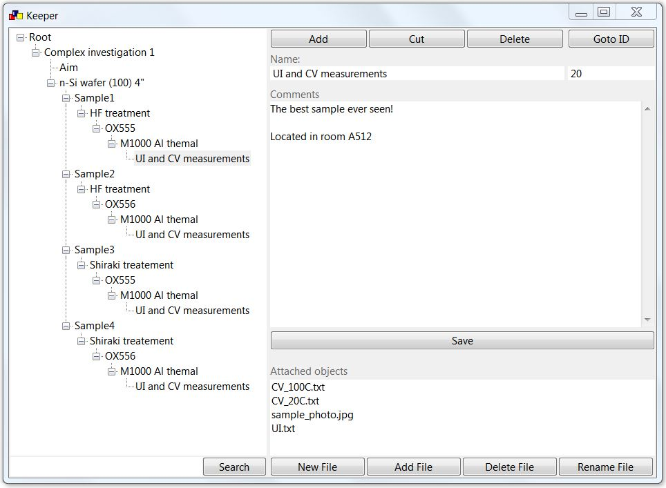
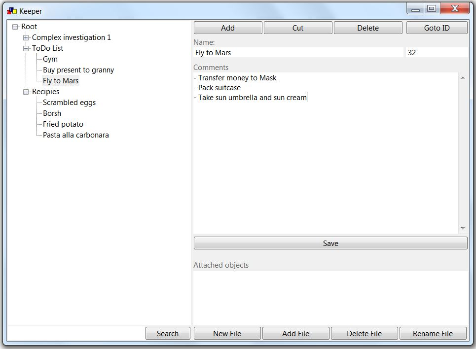

What is it?
wxKeeper is free application which helps you organize data
What are the typical use cases?
wxKeeper can organize a sequence of processes in a tree like view. Each item has a parent item, so it is quite easy
to branch a new process or to find all treatments being done with the item

Each item has an unique id number (top right corner). Instead of marking samples as n-Si/S1/HF/OX555/M1000 it is
better to assign an ID number, for example ID20, or KFC20. Marking your samples (items) with the ID you'll allways
know its prehistory.
wxKeeper can keep various lists like ToDo list, recipies, private notes, ideas

Each item can keep description and related files. Simple text search on items names and description was also
realized. Multiple items selection and right-click commands make it easy to add new information
wxKeeper is a single file application. It can be saved on USB flash. All data and files are stored in data folder
located next to program file
The program is free for use. Please read license terms located in zip file before start using. Windows users can
download the program here. Supported Win7-Win11 versions
Linux users can binary files from
sources by instruction located in readme. Dark theme is supported only in linux
distros